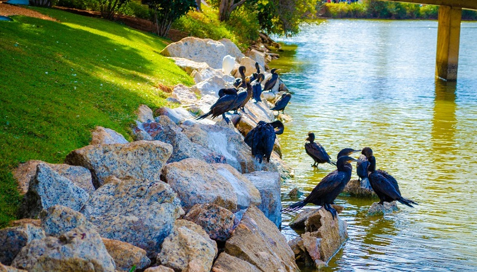

O Taylor Wessing Photographic Portrait Prize 2020 é o principal concurso internacional, aberto a todos, que celebra e promove o que há de melhor na fotografia de retratos contemporâneos de todo o mundo.
Apresentando fotógrafos talentosos, amadores e profissionais estabelecidos, a competição apresenta uma gama diversificada de imagens e conta as histórias frequentemente fascinantes por trás da criação das obras, de retratos formais encomendados a momentos mais espontâneos e íntimos capturando amigos e família.
Este ano a exposição foi apresentada online, numa galeria virtual que reproduz as salas da National Portrait Gallery. Nossa exposição online permitiu que a Galeria atingisse um amplo público internacional e garantiu que a competição continuasse conforme planejado durante a pandemia do Coronavirus. Os visitantes online puderam ver os retratos coletivamente, bem como explorar cada trabalho individual com mais detalhes.
IMAGENS PREMIADAS DE 2020
Estas são imagens registradas por Paulo Geliandes que foram premiadas dentro das 100 melhores fotos do mundo no concurso internacional "Taylor Wessing Photographic Portrait Prize 2020"
